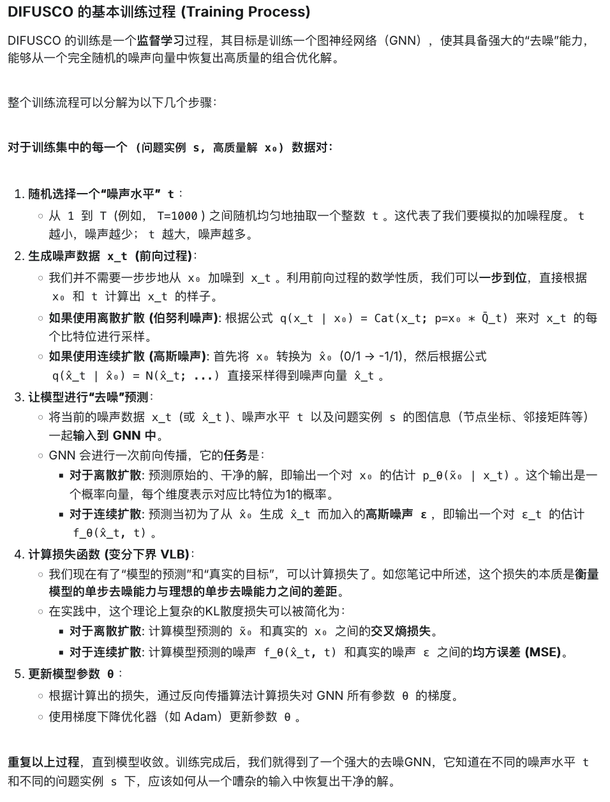
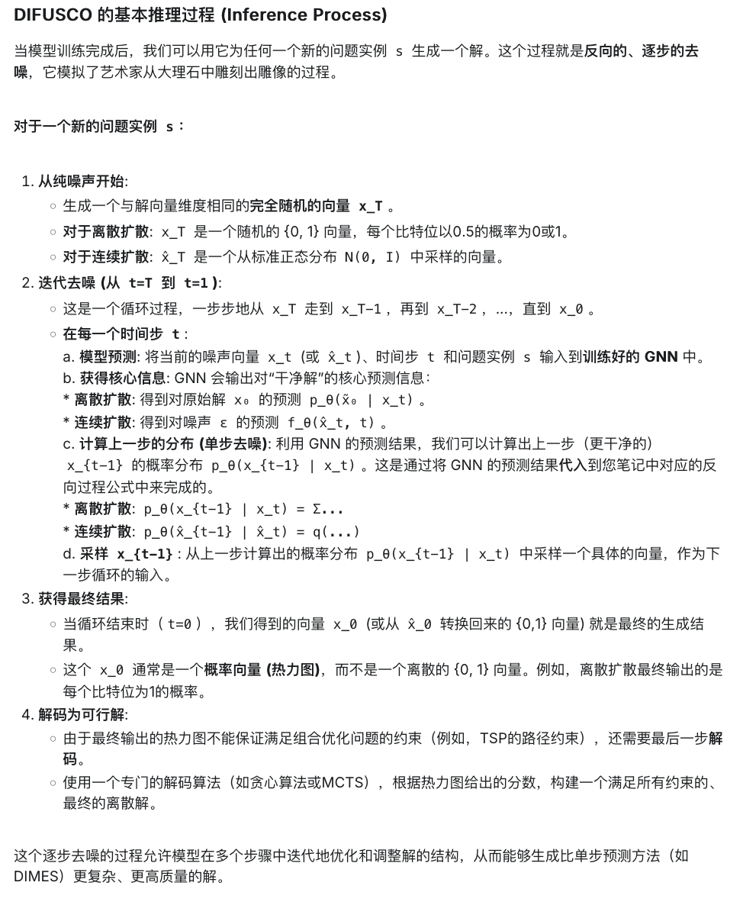
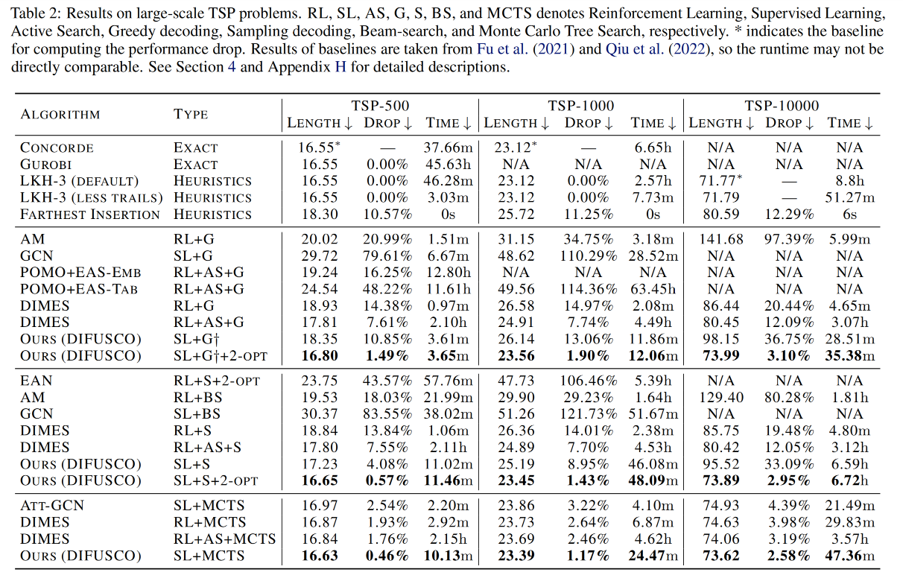
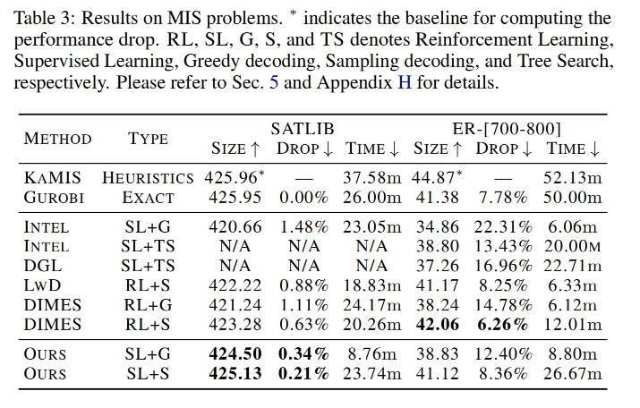

Last updated on November 6, 2025 am
本文将精读论文 “DIFUSCO: Graph-based Diffusion Solvers for Combinatorial Optimization”，作者 Sun et al.，时间 2023 年，链接 arXiv:2302.08224 。
论文概述
这篇论文发表在 NeurIPS 2023 上，提出了 Graph-based Diffusion Solvers for Combinatorial Optimization（DIFUSCO）这一模型，创新性地将扩散模型 (Diffusion Model) 这一在图像和文本生成领域大放异彩的技术，引入到了解决组合优化问题中 ，并且取得了惊人的效果，尤其是在大规模问题 上刷新了 SOTA。
与传统的从零开始一步步构造解不同，DIFUSCO 从纯粹的噪声中，通过学习逐步去噪的过程 ，完成生成高质量解的任务。这是一个全新的范式 。
Abstract
Neural network-based Combinatorial Optimization (CO) methods have shown promising results in solving various NP-complete (NPC) problems without relying on hand-crafted domain knowledge. This paper broadens the current scope of neural solvers for NPC problems by introducing a new graph-based diffusion framework, namely DIFUSCO. Our framework casts NPC problems as discrete { 0 , 1 } \{0, 1\} { 0 , 1 } https://github.com/Edward-Sun/DIFUSCO .
文章提出了一种全新的 ML4CO 范式。它将 CO 问题映射到 { 0 , 1 } \{0, 1\} { 0 , 1 } 基于图的扩散模型进行去噪 ，得到高质量的解。模型在 TSP 和 MIS 问题上进行了测试，其中 TSP 问题的规模达到了 10000 。
Introduction
作者首先介绍了现有 ML4CO 的三大流派及其局限性 ：
自回归构造式方法 (Autoregressive)：问题是扩展性差 。它们需要一步步生成解，每一步都需要进行一次复杂的神经网络计算，导致在处理大规模问题时速度非常慢。非自回归构造式方法 (Non-autoregressive)：问题是表达能力受限 。它们通常假设决策变量之间条件独立，一次性生成 heatmap。虽然速度快，但可能难以捕捉解中复杂的多模态结构。改进式启发方法 (Improvement Heuristics)：问题是训练不稳定且扩展困难 。它们通常基于 RL，在巨大的解空间中搜索，奖励信号稀疏，导致训练困难且耗时。
为此，作者受到 Diffusion Model 生成概率分布的启发，提出了 DIFUSCO，在图上应用迭代去噪声的过程 。作者先将 CO 问题规范为了生成 { 0 , 1 } \{0, 1\} { 0 , 1 }
模型及训练方法
问题定义
作者将一个组合优化问题的解 x \mathbf{x} x { 0 , 1 } \{0, 1\} { 0 , 1 }
对于 TSP: x \mathbf{x} x x i = 1 x_i = 1 x i = 1 i i i
对于 MIS: x \mathbf{x} x x i = 1 x_i = 1 x i = 1
采用监督学习 ，损失函数定义为：
L ( θ ) = E s ∈ S [ − log p θ ( x s ∗ ∣ s ) ] L(\boldsymbol{\theta})=\mathbb{E}_{s \in \mathcal{S}}\left[-\log p_{\boldsymbol{\theta}}\left(\mathbf{x}^{s *} \mid s\right)\right]
L ( θ ) = E s ∈ S [ − log p θ ( x s ∗ ∣ s ) ]
这样，求解一个 CO 问题就等价于生成一个满足特定约束且成本最低的 { 0 , 1 } \{0, 1\} { 0 , 1 } x \mathbf{x} x
扩散模型：前向过程
前向的加噪过程 是固定的、无需学习的。它定义了如何将一个清晰的、真实的解 x 0 \mathbf{x}_0 x 0
其过程是：我们从一个已知的最优解（或高质量解）x 0 \mathbf{x}_0 x 0 T T T t t t x t − 1 \mathbf{x}_{t-1} x t − 1 x t \mathbf{x}_t x t T T T x T \mathbf{x}_T x T x 0 \mathbf{x}_0 x 0
前向过程可以描述为：
q ( x 1 : T ∣ x 0 ) = ∏ t = 1 T q ( x t ∣ x t − 1 ) q\left(\mathbf{x}_{1: T} \mid \mathbf{x}_0\right)=\prod_{t=1}^T q\left(\mathbf{x}_t \mid \mathbf{x}_{t-1}\right)
q ( x 1 : T ∣ x 0 ) = t = 1 ∏ T q ( x t ∣ x t − 1 )
文章探索了两种加入的噪声类型。
离散扩散：伯努利噪声
其中第一种是伯努利噪声 ，其前向过程为：
q ( x t ∣ x t − 1 ) = Cat ( x t ; p = x t − 1 Q t ) q\left(\mathbf{x}_t \mid \mathbf{x}_{t-1}\right)=\operatorname{Cat}\left(\mathbf{x}_t ; \mathbf{p}=\mathbf{x}_{t-1} \mathbf{Q}_t\right)
q ( x t ∣ x t − 1 ) = Cat ( x t ; p = x t − 1 Q t )
其中
Q t = [ ( 1 − β t ) β t β t ( 1 − β t ) ] \mathbf{Q}_t=\left[\begin{array}{cc}
\left(1-\beta_t\right) & \beta_t \\
\beta_t & \left(1-\beta_t\right)
\end{array}\right]
Q t = [ ( 1 − β t ) β t β t ( 1 − β t ) ]
这个过程可以理解为，在每一步，以一定的概率 β t \beta_t β t x t − 1 \mathbf{x}_{t-1} x t − 1
进而，前 t t t
q ( x t ∣ x 0 ) = Cat ( x t ; p = x 0 Q ‾ t ) q\left(\mathbf{x}_t \mid \mathbf{x}_0\right)=\operatorname{Cat}\left(\mathbf{x}_t ; \mathbf{p}=\mathbf{x}_0 \overline{\mathbf{Q}}_t\right)
q ( x t ∣ x 0 ) = Cat ( x t ; p = x 0 Q t )
其中 Q ‾ t = Q 1 Q 2 … Q t \overline{\mathbf{Q}}_t=\mathbf{Q}_1 \mathbf{Q}_2 \ldots \mathbf{Q}_t Q t = Q 1 Q 2 … Q t
第 t − 1 t-1 t − 1
q ( x t − 1 ∣ x t , x 0 ) = q ( x t ∣ x t − 1 , x 0 ) q ( x t − 1 ∣ x 0 ) q ( x t ∣ x 0 ) = Cat ( x t − 1 ; p = x t Q t ⊤ ⊙ x 0 Q ‾ t − 1 x 0 Q ‾ t x t ⊤ ) \begin{aligned}
& q\left(\mathbf{x}_{t-1} \mid \mathbf{x}_t, \mathbf{x}_0\right)=\frac{q\left(\mathbf{x}_t \mid \mathbf{x}_{t-1}, \mathbf{x}_0\right) q\left(\mathbf{x}_{t-1} \mid \mathbf{x}_0\right)}{q\left(\mathbf{x}_t \mid \mathbf{x}_0\right)} \\
& =\operatorname{Cat}\left(\mathbf{x}_{t-1} ; \mathbf{p}=\frac{\mathbf{x}_t \mathbf{Q}_t^{\top} \odot \mathbf{x}_0 \overline{\mathbf{Q}}_{t-1}}{\mathbf{x}_0 \overline{\mathbf{Q}}_t \mathbf{x}_t^{\top}}\right)
\end{aligned}
q ( x t − 1 ∣ x t , x 0 ) = q ( x t ∣ x 0 ) q ( x t ∣ x t − 1 , x 0 ) q ( x t − 1 ∣ x 0 ) = Cat ( x t − 1 ; p = x 0 Q t x t ⊤ x t Q t ⊤ ⊙ x 0 Q t − 1 )
这个公式会在计算反向过程及损失的时候都会用到。
连续扩散：高斯噪声
第二种噪声是高斯噪声 ，这是对离散数据使用连续的扩散过程。
首先，需要将 { 0 , 1 } \{0, 1\} { 0 , 1 } x 0 \mathbf{x}_0 x 0 { − 1 , 1 } \{-1, 1\} { − 1 , 1 } 均值为 0 的高斯噪声 。其前向过程可以描述为：
q ( x ^ t ∣ x ^ t − 1 ) : = N ( x ^ t ; 1 − β t x ^ t − 1 , β t I ) q\left(\hat{\mathbf{x}}_t \mid \hat{\mathbf{x}}_{t-1}\right):=\mathcal{N}\left(\hat{\mathbf{x}}_t ; \sqrt{1-\beta_t} \hat{\mathbf{x}}_{t-1}, \beta_t \mathbf{I}\right)
q ( x ^ t ∣ x ^ t − 1 ) := N ( x ^ t ; 1 − β t x ^ t − 1 , β t I )
类似地，前 t t t
q ( x ^ t ∣ x ^ 0 ) : = N ( x ^ t ; α ˉ t x ^ 0 , ( 1 − α ˉ t ) I ) q\left(\hat{\mathbf{x}}_t \mid \hat{\mathbf{x}}_0\right):=\mathcal{N}\left(\hat{\mathbf{x}}_t ; \sqrt{\bar{\alpha}_t} \hat{\mathbf{x}}_0,\left(1-\bar{\alpha}_t\right) \mathbf{I}\right)
q ( x ^ t ∣ x ^ 0 ) := N ( x ^ t ; α ˉ t x ^ 0 , ( 1 − α ˉ t ) I )
其中 α t = 1 − β t \alpha_t=1-\beta_t α t = 1 − β t α ˉ t = ∏ τ = 1 t α τ \bar{\alpha}_t=\prod_{\tau=1}^t \alpha_\tau α ˉ t = ∏ τ = 1 t α τ
类似地，第 t − 1 t-1 t − 1
q ( x ^ t − 1 ∣ x ^ t , x 0 ) = q ( x ^ t ∣ x ^ t − 1 , x ^ 0 ) q ( x ^ t − 1 ∣ x ^ 0 ) q ( x ^ t ∣ x ^ 0 ) q\left(\hat{\mathbf{x}}_{t-1} \mid \hat{\mathbf{x}}_t, \mathbf{x}_0\right)=\frac{q\left(\hat{\mathbf{x}}_t \mid \hat{\mathbf{x}}_{t-1}, \hat{\mathbf{x}}_0\right) q\left(\hat{\mathbf{x}}_{t-1} \mid \hat{\mathbf{x}}_0\right)}{q\left(\hat{\mathbf{x}}_t \mid \hat{\mathbf{x}}_0\right)}
q ( x ^ t − 1 ∣ x ^ t , x 0 ) = q ( x ^ t ∣ x ^ 0 ) q ( x ^ t ∣ x ^ t − 1 , x ^ 0 ) q ( x ^ t − 1 ∣ x ^ 0 )
注意，最终还需要将预测的 x ^ 0 \hat{\mathbf{x}}_0 x ^ 0 { 0 , 1 } \{0, 1\} { 0 , 1 }
扩散模型：反向过程
反向的去噪过程 是需要学习的，也是整个模型的核心。它的目标是逆转上述的加噪过程。具体来说，需要训练一个神经网络（论文中使用 GNN），让它在只看到更嘈杂的 x t \mathbf{x}_t x t x t − 1 \mathbf{x}_{t-1} x t − 1 p θ ( x t − 1 ∣ x t , s ) p_{\boldsymbol{\theta}}\left(\mathbf{x}_{t-1} \mid \mathbf{x}_t, s\right) p θ ( x t − 1 ∣ x t , s )
反向过程可以描述为：
p θ ( x 0 : T ) = p ( x T ) ∏ t = 1 T p θ ( x t − 1 ∣ x t ) p_{\boldsymbol{\theta}}\left(\mathbf{x}_{0: T}\right)=p\left(\mathbf{x}_T\right) \prod_{t=1}^T p_{\boldsymbol{\theta}}\left(\mathbf{x}_{t-1} \mid \mathbf{x}_t\right)
p θ ( x 0 : T ) = p ( x T ) t = 1 ∏ T p θ ( x t − 1 ∣ x t )
但在两种具体的噪声下，网络要直接预测的目标有所不同。
伯努利噪声下的预测
在离散的扩散模型下，神经网络会预测 p θ ( x ~ 0 ∣ x t ) p_{\boldsymbol{\theta}}\left(\widetilde{\mathbf{x}}_0 \mid \mathbf{x}_t\right) p θ ( x 0 ∣ x t ) p θ ( x t − 1 ∣ x t , s ) p_{\boldsymbol{\theta}}\left(\mathbf{x}_{t-1} \mid \mathbf{x}_t, s\right) p θ ( x t − 1 ∣ x t , s )
p θ ( x t − 1 ∣ x t ) = ∑ x ~ q ( x t − 1 ∣ x t , x ~ 0 ) p θ ( x ~ 0 ∣ x t ) p_{\boldsymbol{\theta}}\left(\mathbf{x}_{t-1} \mid \mathbf{x}_t\right)=\sum_{\widetilde{\mathbf{x}}} q\left(\mathbf{x}_{t-1} \mid \mathbf{x}_t, \widetilde{\mathbf{x}}_0\right) p_{\boldsymbol{\theta}}\left(\widetilde{\mathbf{x}}_0 \mid \mathbf{x}_t\right)
p θ ( x t − 1 ∣ x t ) = x ∑ q ( x t − 1 ∣ x t , x 0 ) p θ ( x 0 ∣ x t )
即训练 GNN 直接从嘈杂的 x t \mathbf{x}_t x t x 0 \mathbf{x}_0 x 0
高斯噪声下的预测
在连续的扩散模型下，神经网络预测每一步加入的高斯噪音：
ϵ ~ t = ( x ^ t − α ˉ t x ^ 0 ) / 1 − α ˉ t = f θ ( x ^ t , t ) \widetilde{\boldsymbol{\epsilon}}_t=\left(\hat{\mathbf{x}}_t-\sqrt{\bar{\alpha}_t} \hat{\mathbf{x}}_0\right) / \sqrt{1-\bar{\alpha}_t}=f_{\boldsymbol{\theta}}\left(\hat{\mathbf{x}}_t, t\right)
ϵ t = ( x ^ t − α ˉ t x ^ 0 ) / 1 − α ˉ t = f θ ( x ^ t , t )
再由一个 x ^ 0 \hat{\mathbf{x}}_0 x ^ 0 p θ ( x t − 1 ∣ x t , s ) p_{\boldsymbol{\theta}}\left(\mathbf{x}_{t-1} \mid \mathbf{x}_t, s\right) p θ ( x t − 1 ∣ x t , s )
p θ ( x ^ t − 1 ∣ x ^ t ) = q ( x ^ t − 1 ∣ x ^ t , x ^ t − 1 − α ˉ t f θ ( x ^ t , t ) α ˉ t ) p_{\boldsymbol{\theta}}\left(\hat{\mathbf{x}}_{t-1} \mid \hat{\mathbf{x}}_t\right)=q\left(\hat{\mathbf{x}}_{t-1} \mid \hat{\mathbf{x}}_t, \frac{\hat{\mathbf{x}}_t-\sqrt{1-\bar{\alpha}_t} f_{\boldsymbol{\theta}}\left(\hat{\mathbf{x}}_t, t\right)}{\sqrt{\bar{\alpha}}_t}\right)
p θ ( x ^ t − 1 ∣ x ^ t ) = q ( x ^ t − 1 ∣ x ^ t , α ˉ t x ^ t − 1 − α ˉ t f θ ( x ^ t , t ) )
模型训练与推理
损失函数
采用扩散模型中经典的变分下界 作为损失函数：
E [ − log p θ ( x 0 ) ] ≤ E q [ − log p θ ( x 0 : T ) q θ ( x 1 : T ∣ x 0 ) ] = E q [ ∑ t > 1 D K L [ q ( x t − 1 ∣ x t , x 0 ) ∥ p θ ( x t − 1 ∣ x t ) ] − log p θ ( x 0 ∣ x 1 ) ] + C \begin{aligned}
\mathbb{E}\left[-\log p_{\boldsymbol{\theta}}\left(\mathbf{x}_0\right)\right] \leq \mathbb{E}_q & {\left[-\log \frac{p_{\boldsymbol{\theta}}\left(\mathbf{x}_{0: T}\right)}{q_{\boldsymbol{\theta}}\left(\mathbf{x}_{1: T} \mid \mathbf{x}_0\right)}\right] } \\
=\mathbb{E}_q\left[\sum_{t>1} D_{K L}\right. & {\left[q\left(\mathbf{x}_{t-1} \mid \mathbf{x}_t, \mathbf{x}_0\right) \| p_{\boldsymbol{\theta}}\left(\mathbf{x}_{t-1} \mid \mathbf{x}_t\right)\right] } \\
& \left.-\log p_{\boldsymbol{\theta}}\left(\mathbf{x}_0 \mid \mathbf{x}_1\right)\right]+C
\end{aligned}
E [ − log p θ ( x 0 ) ] ≤ E q = E q [ t > 1 ∑ D K L [ − log q θ ( x 1 : T ∣ x 0 ) p θ ( x 0 : T ) ] [ q ( x t − 1 ∣ x t , x 0 ) ∥ p θ ( x t − 1 ∣ x t ) ] − log p θ ( x 0 ∣ x 1 ) ] + C
可以这么理解这个损失：
D K L [ q ∣ ∣ p θ ] D_{KL}[ q || p_θ ] D K L [ q ∣∣ p θ ] p θ p_{\boldsymbol{\theta}} p θ q q q - \log p_{\boldsymbol{\theta}}(\mathbf{x}_0 | \mathbf{x}_1) : 它是一个重建项 ，要求模型在去噪的最后一步，能够准确地生成原始的、干净的数据 x 0 \mathbf{x}_0 x 0
基本训练过程

基本推理过程

快速推理
按照扩散模型的标准定义，推理过程需要进行 T T T
因此，我们可以减少去噪的步数 。我们不再使用 [ 1 , 2 , … , T ] [1, 2, \dots, T] [ 1 , 2 , … , T ] M M M M ≪ T M \ll T M ≪ T M = 50 M = 50 M = 50 τ \tau τ τ 1 = 1 , τ M = T \tau_1 = 1, \tau_M = T τ 1 = 1 , τ M = T M M M
这种技术在扩散模型领域被称为 DDIM (Denoising Diffusion Implicit Models) ，它能在大幅减少计算步数的同时，保持较高的生成质量。
当然，如何选择这个子序列 τ \tau τ 调度 。论文中比较了两种调度策略：
线性 (Linear) 调度 : 子序列中的时间步是均匀分布的。例如，每隔 20 步取一个点。余弦 (Cosine) 调度 : 子序列中的时间步在开始阶段（t t t T T T t t t
经过实验发现，余弦调度的效果更好 。作者的解释是，在去噪的早期阶段，解中含有大量的噪声，此时模型的任务非常困难，需要更精细、更密集的迭代来确定解的宏观结构。一旦宏观结构确定，后期的微调就可以用更大的步子进行。
网络选择
对于用于噪声预测的神经网络，文章选择了带有边门控机制的各向异性 GNN (Anisotropic GNN with edge gating) 。这是一个基于消息传递的 GNN，通过多层迭代，聚合邻居节点和边的信息，来更新每个节点和边的特征表示。
解码方法
经过 M M M x 0 \mathbf{x}_0 x 0 概率热力图 (heatmap) ，即一个向量，其中每个元素的值都在 0 到 1 之间，表示对应变量被选中的概率。这个 heatmap 本身并不保证满足 CO 问题的可行性约束。因此，我们需要设计专门的解码策略，将它解码成一个高质量的、离散的、可行的解。
热力图的生成方法是：
对于离散扩散 ，直接使用模型预测的 p θ ( x 0 = 1 ∣ s ) p_{\boldsymbol{\theta}}\left(\mathbf{x}_{\mathbf{0}}=1 \mid s\right) p θ ( x 0 = 1 ∣ s )
对于连续扩散 ，将输出的 [ − 1 , 1 ] [-1, 1] [ − 1 , 1 ] [ 0 , 1 ] [0, 1] [ 0 , 1 ]
对于 TSP 问题的解码，给定输出的热力图 { A i j } \{A_{ij}\} { A ij }
贪心解码 (Greedy Decoding) : 对所有边按 ( A i j + A j i ) / ∥ c i − c j ∥ \left(A_{i j}+A_{j i}\right) /\left\|\mathbf{c}_i-\mathbf{c}_j\right\| ( A ij + A ji ) / ∥ c i − c j ∥ 2-opt 等局部搜索算法进行优化。蒙特卡洛树搜索 (MCTS) : 将热力图作为先验知识，来指导 MCTS 的搜索方向。MCTS 会优先探索那些在热力图上分数高的区域。
对于 MIS 问题，采用贪心解码。此外，还可以采用多重采样 机制，运行多次推理过程选择成本最低的解。
实验及其结果
作者在 TSP 和 MIS 问题上进行了实验。TSP 采用 uniform 分布，节点数为 50 到 10000，使用 Concorde 和 LKH-3 求解器标注。

MIS 采用 SATLIB 和 ER-[700-800]，使用 KaMIS 求解器标注。

TSP 和 MIS 问题上表现都很出色。作者还进行了泛化能力 的测试，DIFUSCO 在不同规模的 TSP 问题上表现出良好的泛化能力。